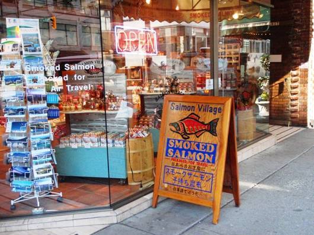
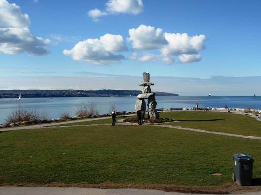
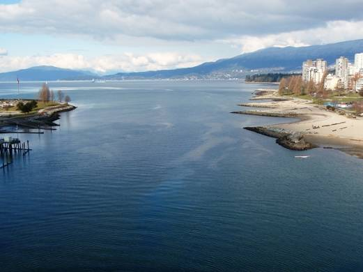
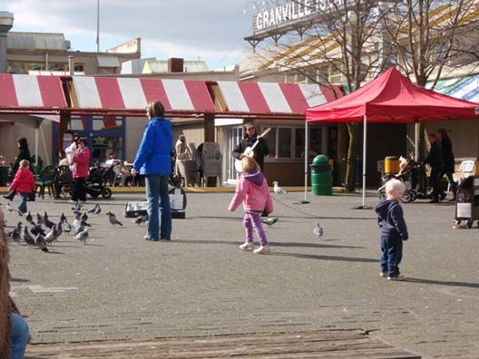
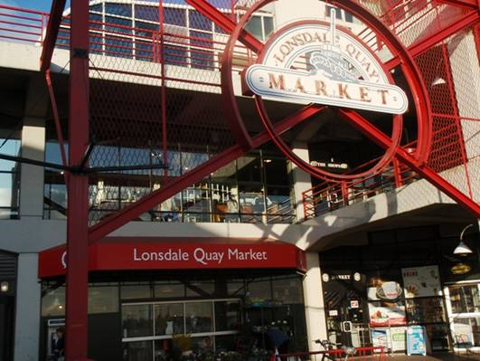
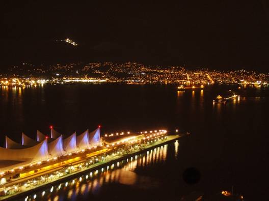
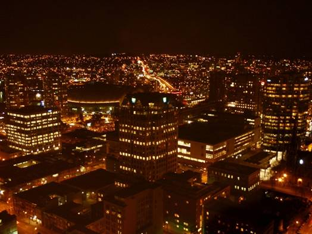

□16日目(2/27)Vancouver(stay)
今日は、夜の打ち上げまでは、完全自由行動の日。バンクーバーの街の見どころを、丸1日かけて見て回る。四人が回った所を紹介しよう。

キャンビーホステルのすぐ近くにあるのが、Gastown(ギャスタウン)。古い町で、蒸気時計がシンボルマーク。

4つの帆がシンボルの、入り江に突き出た建物は、Canada Place(カナダ･プレイス)。デッキのような場所から見えるダウンタウンの沿岸沿いの建物や、入り江の対岸の景色がすばらしい。


Robson Street(ロブソンストリート)。ダウンタウンの真ん中にあるメインストリート。いろいろなお店が軒を連ねる。カナダの名産品や、ブランド品店など、ウインドーショッピングだけでも十分楽しい。

ダウンタウンの南西側の海岸はEnglish Bay Beach(イングリッシュ･ベイ･ビーチ)と呼ばれ、非常に美しい砂浜の海岸が広がる。芝生や遊歩道も整備されており、ジョギングをする人や、犬の散歩、ローラースケートなどを楽しんでいる地元の人がたくさんいる。少し町のほうに行けば高層ビルの立ち並ぶ大都会だが、ここの雰囲気は穏やかで気持ちがいい。海の水も驚くほどきれいで、透き通っている。カモや海鳥が群れを成し、この海で羽根を休めている。都会の雰囲気に疲れたときには特にオススメの場所である。


ダウンタウンの南のFalse Creek(フォルス･クリーク)という入り江にある小さな半島には、Granville Island(グランビル･アイランド)という大型ショッピングエリアがある。マーケットやフードコートが立ち並び、観光客だけでなく、地元の人でもにぎわっているようだ。広場にはいろんな種類の鳥がたくさんいて、食べ物を狙っている。パンなどをちぎってあげると、一斉に鳥たちが迫ってくる。

バンクーバー市内の移動に便利なのが、市バスだ。市内ならどこまででも$2.50。一度チケットを買ったら、90分は乗り換え自由。一日券は$9で売っている。本数も系列も豊富にあるが、停留所の数が多すぎて、ほぼ1ブロックごとに停まる。急いでいる人には向かないかも。
ダウンタウンから少し離れた所には、University of British Columbia(ブリティシュ･コロンビア大学)がある。カナダ西部最大の大学で、その規模は学園都市といえるほどの広さ。

Sea Bus(シーバス)という船に乗ると、バンクーバーの北のNorth Vancouver(ノース･バンクーバー)の街に行くことができる。料金は$3.75で、市バスの1日券でも乗船可。シーバスを降りると、すぐ側には、1日目に行き損ねたLonsdale Quay Market(ロンズデール･キー･マーケット)がある。グランビル･アイランドは屋外にいろんな店が建っているところだったが、ロンズデール･キー･マーケットは大きな建物内にいろいろなお店が入っていた。


夜になって集合し、打ち上げの前にHarbourCentre(ハーバーセンター)という高層ビルにあるLookout(ルックアウト)の展望台に行った。バンクーバーで4番目に高いビルで、360度見渡すことができる。そして、夜ということで最高の夜景を見ることができた。ちなみに、こちらのページでは、ルックアウトからの昼と夕の眺めを体験できる。(Vancouver Lookout公式HP)



そして、打ち上げ。場所はSteam Works(スチーム･ワークス)というビアホール。ここまでカナダ滞在の16日間、あっという間に過ぎ去ってしまったように感じる。一時は日本に帰れなくなるのではと心配もしたが、無事バンクーバーに戻ってこられて、明日帰国の途に着くだけである。ここのビアホールで醸造されたおいしい地ビールと、おいしい料理を楽しみ、思い出を語り合い、バンクーバーの夜は更けていった。